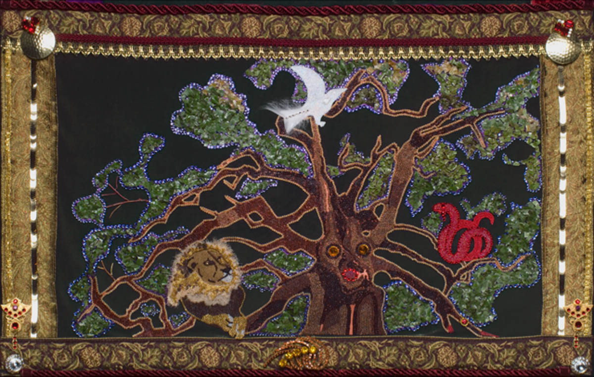

Dreams provide us a portal into the soul. They emerge in unconscious states while playing out our deepest fears, joys, and emotions. When we allow space for our dream content or images, we gain a deeper understanding of ourselves and our place in this world. This article identifies the theories within depth psychology that have shaped the way that we interpret our dreams. It specifically investigates the theories of dream interpretation through association, amplification, animation, active-animation, and ritual. It furthers the discussion of self-evolution through the analysis of a dream through the lens of each of these modalities. In addition, the article expands on the self-awareness and self-reflection gleaned in the process.
Evolution is one of the primary purposes of human life. We live, we learn, we correct, and in response, we evolve. As individuals on this Earth, we constantly look for greater meaning and assurances of our existence. The most effective way to reach our potential, growth, and evolution is through self-reflection. This led to the invention of philosophy, which later would evolve into psychology in our quest for self-actualization. A primary component of self-growth is to access our deeper unconscious states. There are twenty-four hours in a day, and based on the way we are biologically created, we spend on average around sixteen hours awake and seven to nine hours asleep. That roughly equates to an average of 2,920 hours a year that we spend in a sleeping state. During our sleeping state, we rest, repair, and process in the form of dreams. Dreams are said to be a gateway into our soul. They provide a direct link to our unconsciousness while bypassing the inhibition of our conscious chatter. Whitmont and Perera (1989) recognize that:
The dream itself is a natural and necessary expression of the life force-- one that manifests in sleeping consciousness and is sometimes remembered and recounted across the threshold of waking,..it’s basic purpose is the manifestation and expression of this life force. It gives us images of energy, synthesizing past and present, personal and collective experiences (p.2).
Furthermore, Berry (2000) notes the “images in our dreams are not reflections of external objects but are “inner images” (p.94). Thus, our dreams provide us with a deeper window and understanding of our internal state, feelings, fears, and hopes. If we slow down and pay attention, we can access content that can assist us on our life’s journey towards greater self-discovery and contentment. Whitmont and Perea (1989) further this discussion by noting that:
In working with dreams one may encounter a feeling of profound numinosity and of wonder at the objectivity and creativity of the unknown entity we call, for lack of a better name, the Guiding Self. These feelings grow out of the experience of receiving successions of precisely relevant dream image messages and of the concomitant sense of personal growth (p. 180).
This article investigates the history, methods, and benefits of dream interpretation as a means for self-discovery. It specifically focuses on the methods from a depth psychology lens with Freud and Jung's lineage and their development of association, amplification, animation, active imagination, and ritual. Furthermore, I highlight the effectiveness of these modalities through the analysis of a personal dream rich in energetic content.
The Theory of Dream Interpretation
Within depth psychology, Freud was the first to assert that dreams act as a window into the unconscious. He believed that dreams present us with “manifest content” while hiding the “latent content” of our unconscious thoughts, wishes, and desires (Freud, 2001, p.8). Thus, he believed that dreams are representations of our repressed thoughts and desires. Freud developed the dream interpretive method of associations of his client's dreams manifest or apparent content to access their latent or hidden content, thus providing greater insight (Freud, 2001). Patients would “free associate” what each dream image brought to their mind through the use of associations. In turn, the patient’s free association accessed the deeper unconsciousness and provided workable material that Freud would analyze (Freud, 2001).
Like Freud, Jung recognized that dreams are a route to our unconsciousness. However, Jung disagreed that all dreams are repressed content and instead developed the concept that dream states access a collective human psyche represented through “universal archetypes” (Aizenstat, 2011, p. 16). In response to this theory, Jung developed amplification to investigate our dream images' archetypal energies (Jung, 1974). He also began to extend dreamwork in the waking hours through active imagination (Johnson, 1986). Jung’s expansion of dreamwork allowed his analysands to engage with the unconscious in a meaningful and self-directed way. Jung (1974) underscored that:
Interpretation of dreams requires exact knowledge of the conscious status quo, so the treatment of dream symbolism demands that we take into account the dreamer’s philosophical, religious, and moral convictions. It is far wiser practice not to regard dream-symbols semiotically, i.e, as symptoms of a fixed character, but as true symbols, i.e., as expressions of a content not yet consciously recognized or conceptually formulated. In addition, they must be considered in relation to the dreamer’s immediate state of consciousness (p.104).
The final dream interpretation theory discussed throughout this article is the use of dream tending’s animation developed by Steve Aizenstat (Aizenstat, 2011). Within dream tending, the dream image is viewed as a living embodied entity. In response to a dream Aizenstat (2011) suggests that we treat the image that appears as one would a visitor or guest. When you analyze or tend dreams in this way, you gain fresh perspectives and greater insights into the messages underlying the dream image's presence.
The Dream: Lizard Devouring Snake
To illustrate how dreams act as an inner guidance, I will share my own experience of a dream entitled Lizard Devouring Snake. This dream took place towards the end of October 2020. First, it’s essential to understand the context of my life at the time of this dream. I had this dream while enrolled at a Depth oriented PhD program. Two months prior to this dream, my husband and partner of ten years and I had a significant conflict which resulted in a separation and conversations contemplating divorce. Further, I felt like I was undergoing significant personal growth, development, and transformation. My life was changing rapidly. My daughter had just turned into a young adult and was preparing for her individuation journey, and I felt at the edge of the unknown. The following is my Lizard Devouring Snake dream:
I am standing in the desert on a path in the red rocks. I can feel the warmth of the sun on my skin. Ahead of me on the path, I notice a black snake slithering across the path. Suddenly, in a violent movement, a lizard appears and catches the snake's head in its mouth. The snake thrashes and writhes, trying to escape, trying to fight back. Eventually, the snake succumbs and gives up. I watch paralyzed by this action in awe and anxiety with pressure in my chest.
I woke suddenly and with a sense of panic from this dream. The images felt burnt in my eyes, and the pressure in my chest was palpable. I knew that this dream was important. As a result, I decided that this dream could act as a doorway in my self-discovery. It reminded me of all I was digesting within my academic life, and I recalled Whitmont’s (1989) assertion that “dreams are a portal to the source of life” (180). Moreover, the somatic response to this dream and the felt bodily sensations highlighted the dream's power and potential for meaning. This dream would act as my descent into the depths of myself. In the following paragraphs, I will be discussing specific theories, followed by their application in analyzing my Lizard Devouring Snake dream. In addition, I will discuss the insights and self-reflection gained along the way through the lens of these dream interpretive theories.
Association: Insight into the Individual Context
According to Johnson (1986), associations consist of the connections one makes with each dream image. The dream image contains “persons, objects, situations, colors, sounds, or speech” (Johnson,1986, p.52). As noted previously, Freud was the first to develop the use of associations as a means to understand dream content. However, those who followed him in succession continued to value the application of associations within their evolved theories. As such, associations should be the first act of dream symbol expansion. Jung (1974) recognized that through associations, we view the symbol in reference to our “conscious situation”, allowing the symbol to have personal meaning without having a fixed limitation (p.105).
Furthermore, associations help “ground the images in the personal psychological reality” while highlighting “what events emotions or feelings-painful, joyful, or seemingly indifferent-happen to come to mind in connection” with the images (Whitmont & Perera, 1989, p. 35). Johnson (1986) recognizes the importance of accessing the unconscious through associations. He suggests that to apply association, a dreamer must go through each dream image and relate their associations, always ensuring to return to the image (Johnson, 1986).
Lizard Devouring Snake Associations
When interpreting my dream, the snake was the first image used in association. My initial response to snakes is one of fear. I’m reminded of when I was in elementary school, and the class snake bit me on the neck, or when I was in graduate school running in the desert, and I witnessed a rattlesnake lunge at my partner's feet. There’s a darkness to snakes, a deeper knowing.
The lizard was the next image that I chose to investigate. In this association, I am reminded of how fast they are—their stealth and strength. Living in Hawaii, I’m surrounded by lizards in the form of geckos, who are my continual companion. They live throughout my home, sing to me at night, and vie for territory with their rivals on my deck.
The following image to be magnified through association was the desert. When I think of the desert and Red Rocks, I’m reminded of my Master’s program in Arizona and my time there. The desert or Red rocks' image brings Sedona to my mind, representing heat, barrenness, and beauty. The red rocks of Sedona also hold significant energy and healing.
The final image I investigated through association was the sun and the somatic sensation of heat on my skin. Firstly, I love the sun and its warmth. There is a pleasure and safety to being outside underneath its rays. It feels energizing and transformative. The summer and hottest parts of the day have always been my favorite.
Amplification: Learning from the Archetypes by Breaking down imagery:
Jung expanded Freud’s dream interpretation to develop the amplification of dream images to understand their collective archetypal energy (Jung 1974). Jung’s amplification provided a doorway to the collective unconscious by recognizing myths, stories, and legends associated with the imagery (Jung, 1974). Johnson (1986) notes that “dreams draw on universal, primordial sources that are deep in the collective unconscious of all humankind” (p.60).
Amplification furthers our ability to recognize a “dream’s personal context with parallel and corresponding motifs from myth, fairy tale, art, literature the cultural storehouse of archetypal images. It is an explanation in mythological terms” (Whitmont & Perera, 1989). When we engage in the amplification of dreams, it can open the dreamer to significant meaning and guidance (Aizenstat, 2011). It allows us to expand beyond our known associations and step into the universal or collective meanings associated with a symbol. Simultaneously, it recognizes the human psyche's interconnection with all beings and history throughout our collective experience and draws upon that knowledge for guidance.
Lizard Devouring Snake Amplifications
The snake is viewed as powerful and transformative throughout the world. In Ancient Greece, the snake was seen as a means of “alchemy and healing” (Andrews, 2003). In India, tantric traditions consider the snake to reside at the base of the spine, represented as kundalini energy that rises while simultaneously opening the chakra system “representing transcendence and awakening” (Ronnberg & Martin, 2010, p.196). Furthermore, snakes represent healing and change, death and rebirth as they shed their skin (Andrews, 2003). Snakes are carnivorous and “swallow their prey whole” (Andrews, 2003, p.362).
The amplification of the lizard symbolizes psychic intuition. Lizards bask in the sun and recognize the subtlest of insect movement (Andrews, 2003). Andrews (2003) further notes that in some Native American traditions:
The lizard is associated with dreamtime. Dreams contain some of the subtlest perceptions of the mind of which we may not be conscious. They are translated to us through dreams to make us more conscious. These can be fears or foreshadowings, but almost always they are the things to which we do not pay attention (p.359).
The amplification of the desert recognizes the harsh environmental conditions from the extreme opposites of hot and cold. Ronnberg and Martin (2010) report that deserts act as a “psychic landscape”, a place of “alienation” and “spiritual thirst” (p.116). The Ancient Egyptians believed the desert or the “red land” was desolate and ruled by the god Set. It encapsulated the disordered forces of passion and violence (Ronnberg & Martin, 2010, p.116).
The final amplification investigated the sun, which to many represent life. “To sun-worshippers over millennia, solar rays have seemed to transfer magical properties of fertility, creativity, prophecy, healing and even (for the alchemists) a living potentiality for wholeness that dwells in every individual” (Ronnberg & Martin, 2010, p.22). Furthermore, Ronnberg and Martin (2010) highlight the sun or solar knowledge ignites creativity, and “intuition taking root in darkness” (p.22). The sun or “Sol was also the ‘gold’, the ‘yellow balsam,’ the veritas, or truth, behind the capacity of immersion in moist, lunarlike feelings, moods … and dreams reflecting the magical and mercurial” (Ronnberg & Martin, 2010, p.22).
Animation- The living image
Stephen Aizenstat’s (2011) use of animation identifies our dreams as living and embodied reality. He stresses the importance of engaging in dream interpretation or dream tending without “an agenda to interpret or judge” for when we do so, “the living image becomes stagnant, fixed and eventually dies” (Aizenstat, 2011, p.25).
Furthermore, Aizenstat (2011) asserts that viewing the dream image in an embodied way:
Our relationship with the living image deepens, a new and important possibility arises: the capacity for revelation. Living images contain many surprising insights and secrets that reveal themselves under the right conditions. We do not manufacture revelation. It happens naturally when we are attuned to living images in an embodied and receptive way. For an image to reveal something essential, it must exist in a field of acceptance, positive regard, and openness (p. 46).
The process of animating an image begins with us bringing the dream image into the present moment. We accomplish this by inviting the image into the room and asking the questions “who is visiting now”, or “what’s happening here?” (Aizenstat, 2011, p.23). Asking these questions ignites curiosity and dialogue with the dream image. We receive responses that we may not have expected, allowing us to gain a deeper understanding of the present moment content.
Using Animation: Lizard Devouring Snake
Animating my dream Lizard Devouring Snake consisted of inviting the lizard and snake's embodied images on separate occasions while I held a dialogue with each. While this can be very similar to active imagination, I decided to include it underneath animation as it specifically depended on the openness and enlightening answers of the dream images. The dialogue with each image is contained in the following sections.

Dialoguing with Snake
Using dream tending, I invited the snake into dialogue by first asking the question, “who’s visiting now?” (Aizenstat, 2011, p.23). While I held a conversation with the snake, I could feel the somatic sensation of the lizard biting down upon the snake's neck. This somatic recognition was palpable, and in the experience, I recognized that I’m viscerally connected to this snake image. I recognized a felt sensation that noted the snake represented my freedom and autonomy, in addition to my capacity for growth and self-exploration. The following was the response my unconscious uncovered.
Dreamer: Who’s visiting now? I noticed a pain a twinge in my somatic response to your presence. I have always been in fear of you since I was bit on the neck as a child. I mourned your devouring. You fought hard. You writhed and struggled, yet you continued to be outpowered. There’s such an awestruck beauty to your pain. How did you feel about it? > There is a silence and a calm presence.
Snake: I feel content. It’s a cycle of life, an important of sacrifice. This is natural. The pain is natural. It’s evolutionary. > Dreamer: What’s happening here? What do you need?
Snake: I need you to be at peace with the shadow with the pain. I need you to embrace its natural cycles and let go of control. Stop planning. Start embracing the unknown. It will be okay. You don’t need to have perfection nor the answers. You can embrace the present moment. I’m an ancestor, a spirit guide. Guiding you on a path.
Dialoguing with Lizard
The invitation to dialogue with the lizard based on the dream tending animation model was similar to how I engaged the snake dream image. I sat in silence, opened up to the deeper knowing, waited, and listened. Below is the dialogue we held together:
Dreamer: Who is visiting now? > Lizard: I am the inner self: the darkness and the fear. I devour hopes, dreams, and potential. I keep you limited and stuck. My purpose is to challenge you. I’m your nightmare state. Everything you fear encapsulated in a single form. My intention is to make you feel stuck, limited, and small. I block the path to ascension—the path to self-knowledge. I’m your ego. Your shoulds, your oughts, your whys. All of the pressure you feel. > Dreamer: What is happening here? What am I supposed to learn? > Lizard: It’s not about your relationship. It’s deeper. You have deeper pain and turmoil. You lack faith within yourself and your capacity. I’m the manifestation of your self-doubt—the core of your inadequacy.
In response to this dialogue with the lizard, I noticed somatic sensations and pressure in my chest in the form of tightness and anxiety. The bodily felt sensations felt real and content-rich. As Schul (2015) suggested, when the somatic sensations arose, I monitored them, felt them, and allowed additional attention to what they may have been trying to teach me.
Active imagination
Similar to dreaming, active imagination accesses the unconscious and furthers our dream content. According to Johnson (1986), it “allow(s) the images to rise up out of the unconscious” while coming into the conscious mind like a “dream if you were asleep” (p.138). In active imagination, you can talk and interact with your dream images. “They answer back. You are startled to find out that they express radically different viewpoints from those of your conscious mind” (Johnson, 1986, p.138). Whitmont and Perera (1989) expand the concept of active imagination to include the meditation of the dream images through the use of art, “gestalt and psychodramatic” experiences (p.9). The psychodrama or gestalt can be in the form of movement or dance. Johnson (1986) describes active imagination as a way that:
(W)e can go to these unlived parts of ourselves and experience them in a meaningful way. It is possible to live much of life on a symbolic level, and this often satisfies that unlived part of ourselves even more than if we had lived it out externally (p.208).
Often, we find new and expanded information about ourselves when we engage with active imagination. It provides us greater depth into the meaning behind the dream images allowing us to engage with the unconsciousness directly.
Active imagination: Lizard Devouring Snake
In the following, I will discuss the vast array of experimentation I used while furthering my Lizard devouring Snake dream through active imagination. In this process, I engaged in art, poetry, sandplay, and dance and movement. Each time I engaged with the dream images, I made a deeper descent into the dream content and overall meaning gleaned from my unconscious. Within this article, I have structured the active imaginations directly correlated to how I processed them in real-time. The process took over a series of two weeks and finished with a sandplay therapeutic process.
Art as a Means to Further the Active Imagination
I used art as a medium to further my dream content directly after I had engaged in dialogue with the images and felt their presence. I sat in meditation, contemplating the living images' responses, and immediately pulled out my watercolors. Two images emerged from this interaction. They are included below:
The first watercolor image was my view of the lizard devouring the snake blocking my path in the red rock desert. I noticed in this painting that the conflict emerged directly before a fork in the path. I felt the immediate path divergence was essential to highlight. The second image that emerged was a close-up of the lizard's face and, more importantly, his eyes with the black snake in his mouth. Again, while making this image, I recognized the eyes' intensity and felt a powerful and somatically unsettling sensation in my body. Similar to the feeling of bearing into my soul.
The use of poetry
Poetry, similar to art, allowed me to have a deeper dialogue with the dream content. In response, I gained greater insight, self-reflection, and awareness. While I’m not a typical poet, I spontaneously allowed the words to emerge from the unconscious space. My poem allowed me to facilitate a deeper understanding of the dream experience. The poem is included below:
The snake slithered along the hot ground They were descendants of the ancestors Gatekeepers who held the key to transformation I watched in wonder and curiosity about the teaching they were about to impart I am the truth I am the witness to your souls' growth You must step away from the fear Stand away from the light and allow yourself to embark into the dark The darkness and unknown within yourself hold the answers Let go and submit Let go of the clutching The grasping and move with beauty and ease Slither on the ground and find peace Slow down the mind and look within Stop looking to the exterior cues to guide you and go within
Upon further introspection and interpretation, I interpreted this poem to affirm the importance of my stepping into deeper intuition and self-guidance. The poem directly challenged me to trust my instinct and slow down in the process.
Movement and dance
I advanced my self-introspection of the Lizard Devouring Snake dream by incorporating a dance of the snake. I slithered and squirmed on the floor. I moved outwards in a free-flowing movement in the form of a circumamubulatory spiral. With each action, I dove deeper into myself. At the end of the exercise, I laid on my stomach, and my body violently writhed and squirmed as I embodied the snake at the point of contact with the lizard clenching the snake in its jaws. I mourned. I fell into silence while noting the darkness, which felt similar to an abyss. I let go, sobbed, and grieved as I sensed the intensity of holding everything and everyone’s expectations. I had finally broke. I moved into a seated position with my eyes closed, sitting in the darkness and the unknown. I slowly started moving again in a spiral undulation but much less pronounced. My palms laid open on my knees, and I positioned myself in a way open to receive the guidance.
This experience of movement felt profound. The spiral-like undulations reminded me of the rise of kundalini energy similar to a snake rising up my spine and opening my chakra centers typically referred to as “spinning vortexes” (Schulz, 2015,p.188).
Using sandplay art and meditation as a means to understand the imagery
Dora Kalff, a swiss Jungian analyst, developed sandplay therapy in the 1950s. Sandplay uses miniatures in a tray of sand to access the unconscious (Boik & Goodwin, 2000). It was my final attempt to expand my dream through active imagination. I felt humbled and grateful to have Lorraine Razzi-Freedle provide therapeutic support as I interacted with these dream images. In this therapeutic process, I used the miniatures to recreate my dream in the sand, and that action simultaneously created a container. Creating a “spontaneous three-dimensional image” of my dream, I facilitated conscious recognition while signaling containment to my inner consciousness (Atherton, 2009). As Atherton (2009) asserts, “the sand tray, like a dream, does not tell you what you already know, but it brings to life and illuminates what has remained hidden, what has been only a fleeting thought perhaps" (p.1). When seen from this light, I used sandplay as a means of being witnessed by another, containing the archetypal energy and reflecting on the wisdom the entire process had bestowed upon me. In the middle of the tray, a group of black and brown stones underneath a Lizard head with a wide-open mouth face to face in confrontation with the snake. I utilized a monkey god's image at the top of the scene and a lotus with a bowing figuring representing the humility of bearing witness to this intense interaction. The Monkey image was similar to Lorraine’s position as the container of the process, while the figure in bowing reverence represented me.
The lizard and snake confrontation was contained with candles in a circular formation with crystals extending outwards. The candles and crystals represented the sun's energy and rays. Processing this tray with my guide and mentor, I noticed the palpable energy still present. There is a numinosity to the tray. I had felt a sense of deep, profound, soulful meaning that I wanted to integrate.
Ritual: The Art of carrying it Forward
The use of a ritual or a physical act integrates the dream into our consciousness (Johnson, 1986). Toni Wolff asserted that people are too often in the logical mind or their thoughts. She is quoted by Johnson (1986) as saying: “People can analyze for twenty years, and nothing below the neck is aware that anything is going on! You have to do something about it. Do something with your muscles!’’ (p.100). This led to the development of ritual or ceremony. A small reminder to both the body and the brain that you have heard the wisdom from the unconscious. According to Johnson (1986), rituals “take the essence that you have distilled from it- the meaning, insight, or basic principle that you have derived from the experience- and incarnate it by doing a physical ritual or by integrating it into your practical life” (p.197). He further notes that they don’t need to be enormous aggrandized acts, but can instead be small “symbolic acts to set up a connection between the conscious mind and the unconscious” (Johnson, 1986, p.99).
Ritual and Carrying it Forward: Lizard Devouring Snake
In reference to the importance of ritual, I recognize that I need to do something small that honors the dream images and messages they provided me. The rituals I have developed in response to this dream heighten my sense of perception like a lizard. They include spending time in the sun, allowing the warmth to kiss my skin, and pierce the veil to the unconscious. Further, I have enhanced my meditation practice to focus on my felt senses and intuition.
Discussion
My work with the dream Lizard Devouring Snake opened a door within my life to greater self-awareness and understanding. I recognize the importance of this dream as it calls into question the improbable. The lizard devoured the snake within my dream, yet rationally, snakes are carnivorous and could consume the lizard. In contrast, lizards eat insects and some plant material (Andrews, 2003). This act makes the dream numinous and meaningful. Barry (2000) highlights the importance of paying attention to the unfamiliar:
When the dream presents an image that goes against the way things are naturally, let’s assume such images to be of high value because they are examples of the opus contra naturam. As I understand Jung’s idea of symbols, they change the course of nature and upgrade its energy to a higher value. Hence the unnatural, unusual, peculiar image is the one being singled out and the one containing the most value (98).
Furthermore, I recognize the importance of slowing down as I lean into my freedom and intuition. I am stepping away from a need to control or fix things while allowing things to develop. I am learning more about myself in this process as I progress further in my graduate work within depth psychology. I’ve recognized that I do not need to make immediate decisions regarding my relationship with my husband and that I can embrace my daughter's individuation into young adulthood. This dream has acted as a catalyst in my life, allowing me to redefine my most profound relationships while simultaneously providing greater space and nourishment towards myself as I allow things to grow and transform.

References
Aizenstat, S, (2011). Dream tending: awakening to the healing power of dreams. Spring Journal.
Andrews, T. (2003). The Magic of the Reptile World. In Animal Speak: The Spiritual and Magical Powers of Creatures Great and Small. Twenty-fourth printings.
Atherton, J. (2009). Sand Therapy – Dreams Made Visible. Inside Out: Journal of the Irish Association of Humanistic and Integrative Psychotherapy, (59).
Berry, P. (2000). Working with images the theoretical base of archetypal psychology. (S. Benjamin, Ed.). Spring Publications.
Boik, B. L., & Goodwin, E. A. (2000). Sandplay Therapy: A step-by-step manual for psychotherapists of diverse orientations. W.W. Norton.
Freud, S. (2001). On Dreams. Dover Publications.
Johnson, R. A. (1986). Inner Work: Using Dreams and Active Imagination for Personal Growth. HarperOne.
Jung, C. (1974). Dreams. Princeton University Press.
Ronnberg, A., & Martin, K. (2010). Desert, Snakes. In The book of symbols (pp. 116–117, &194-197).Taschen.
Schul, J. (2015). Embodied Dreams. In S. Fraleigh (Ed.), Moving consciously: somatic transformations through dance, yoga, and touch (pp. 181–194). essay, University of Illinois Press.
Whitmont, E., & Perera, S. (1989). Dreams, A Portal To the Source. Routledge.